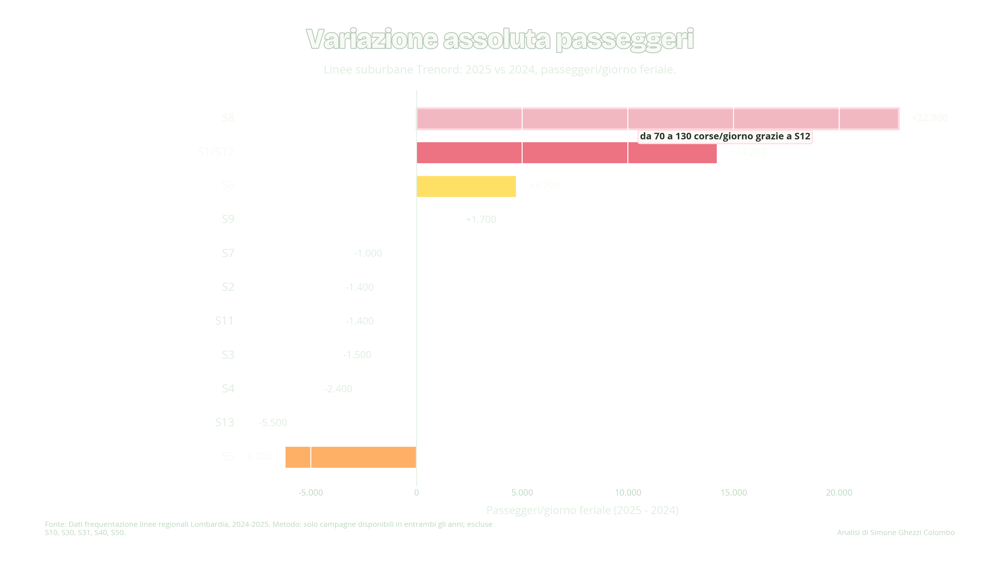
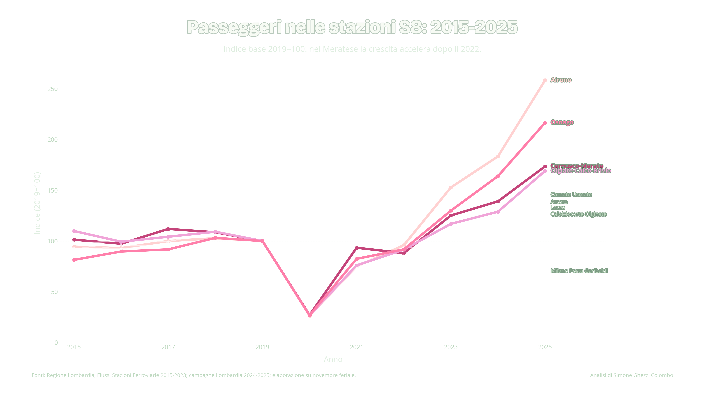
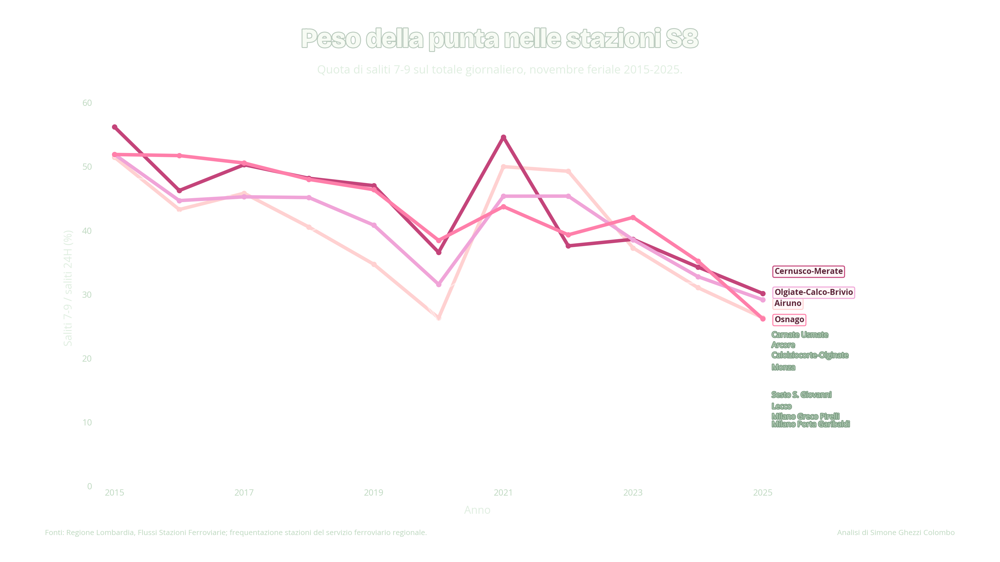
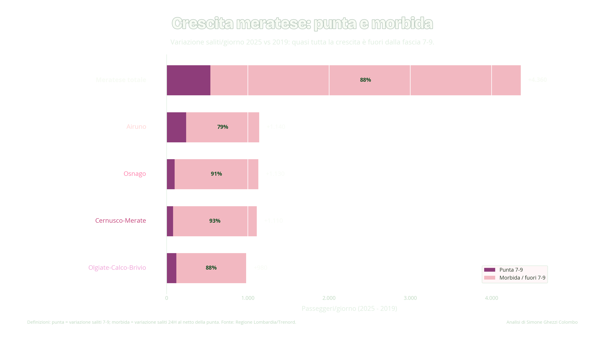

Slide 4
Linee suburbane Trenord
S8, S1/S12, S5, S6 and total Trenord, indexed to 2019=100.
Dati, grafici e metodologia sulla linea S8 Lecco-Carnate-Milano e sulle stazioni del Meratese.
Un repository pubblico pensato per rendere verificabili e riutilizzabili i dati presentati: ogni grafico ha il suo CSV, le fonti sono esplicitate e i principali dati grezzi sono disponibili per controllo.

Four headline numbers from the published datasets, useful as a quick entry point before opening the CSV files.
The file data/manifest.csv links each presentation slide to the corresponding PNG figure, processed CSV dataset, and short source note. This is the fastest path for institutional reuse.
Analisi di Simone Ghezzi Colombo su dati Regione Lombardia, Trenord e fonti indicate nei dataset.
Presentation-ready figures mirrored with direct links to the underlying CSV files.

S8, S1/S12, S5, S6 and total Trenord, indexed to 2019=100.

2025 vs 2024 comparison using only campaigns available in both years.

Positioning the S8 among the most used local rail lines considered in Italy.

A public benchmark comparing the S8 with selected Italian metro or metro-like services.

Station-level weekday boardings in November, indexed to 2019=100.
Growth in passengers and change in passengers per train across comparable Lombardy stations.


Decomposition of Meratese growth between the 7-9 peak and the rest of the day.
Definitions, filters, caveats and file structure are documented in Markdown for quick review and reuse.
Main raw files are included for auditability. Processed files remain the recommended entry point for reuse.
{kind=link}
{kind=link}
{kind=link}
{kind=link}
{kind=link}
{kind=link}
{kind=link}
{kind=link}